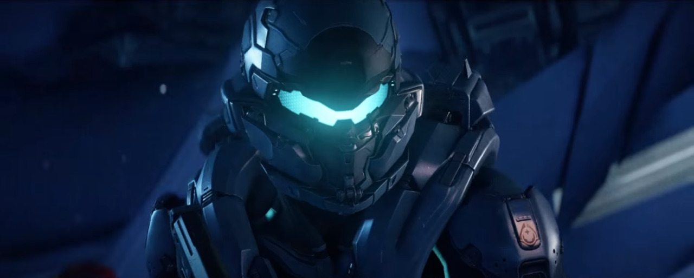
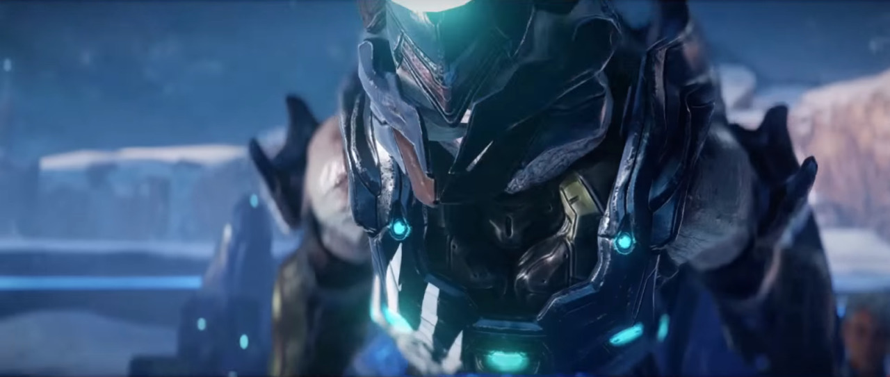
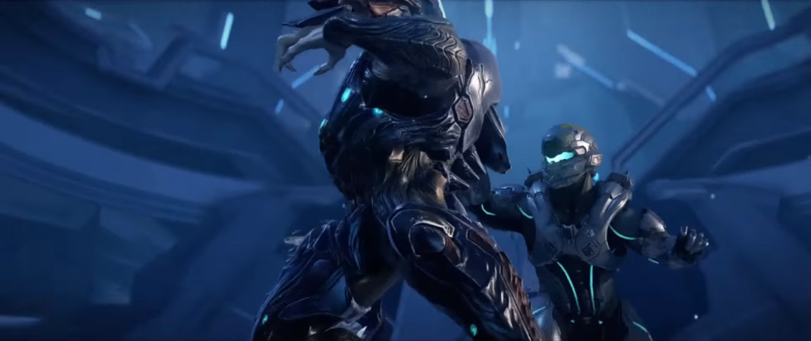
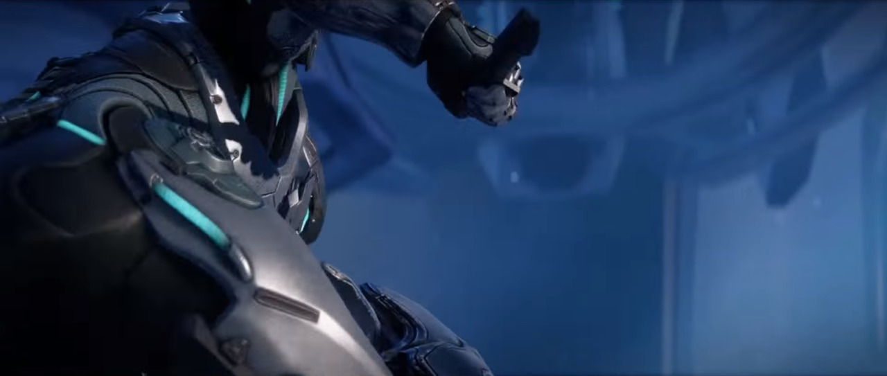
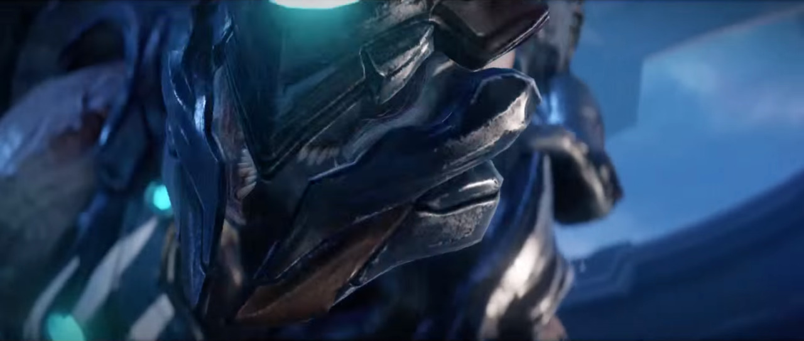

Jul had never thought he would be afraid to die. He’d faced death so many times that he was used to it, familiar with the flood of terrified excitement, certain that if the end came then his clan would know that he met his end with honour. But he’d never planned to face the great transcendence helpless and struggling, unable even to inflict damage in his dying moments.
It was the worst possible disgrace.
And disgrace terrified him far more than death. [Halo: Glasslands]